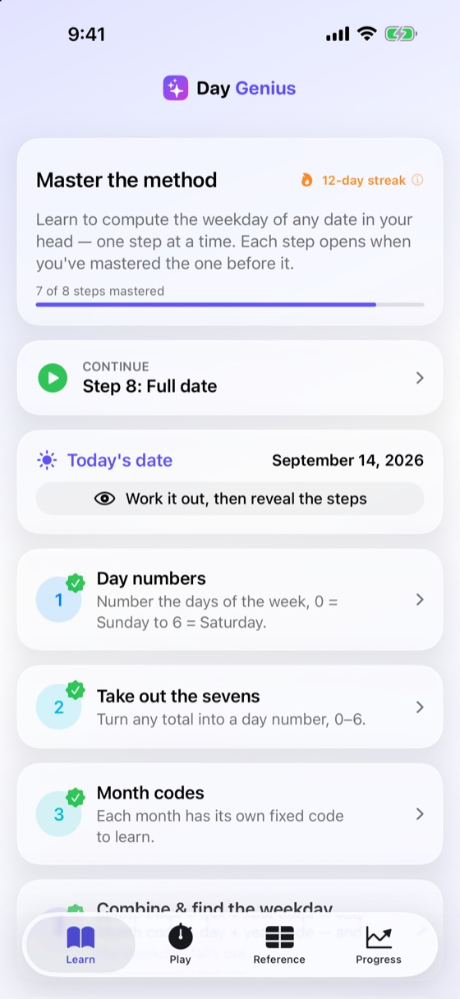
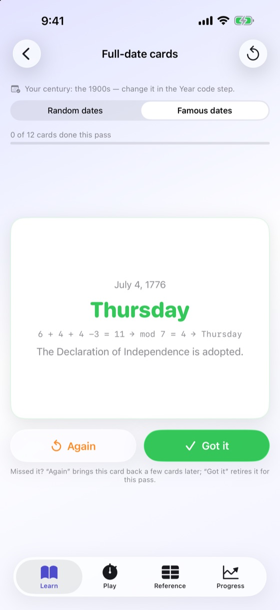
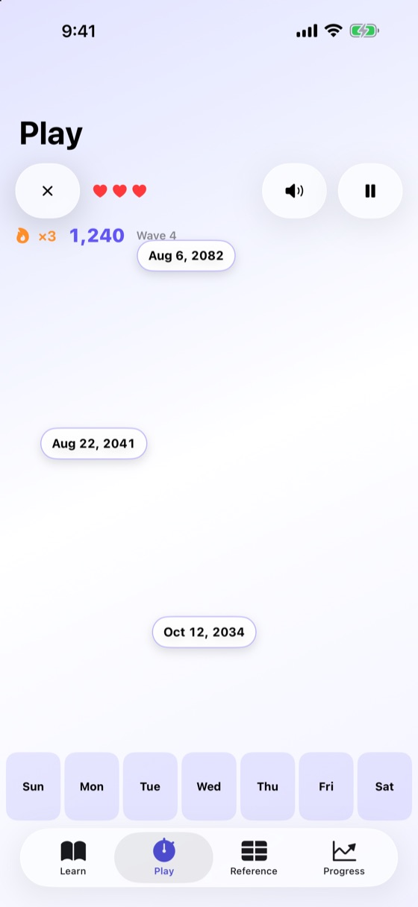
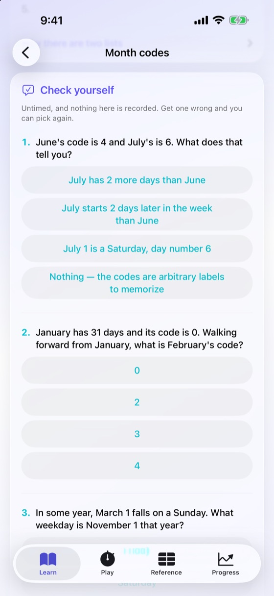
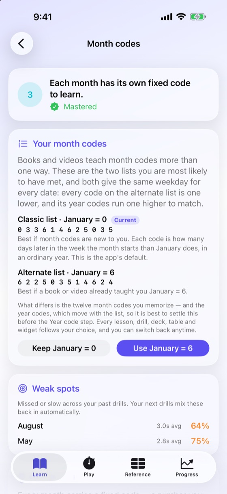
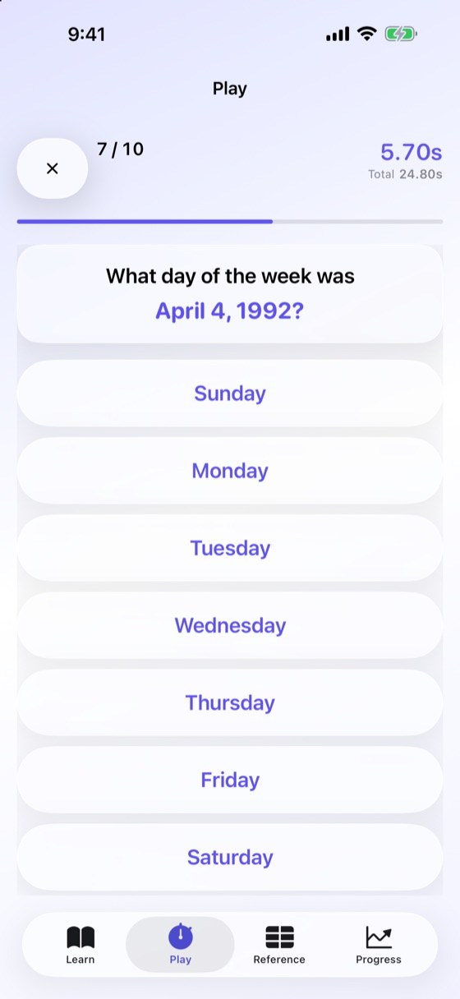
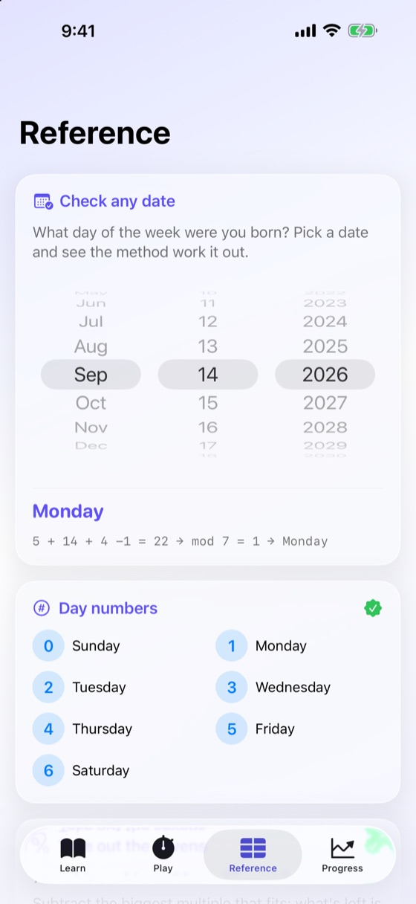
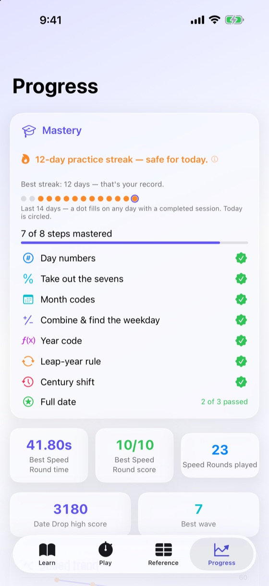

Day Genius
Name the weekday of any date, in your head.
Someone mentions a date and you answer, with no calendar and no phone. It looks like a party trick, but it’s a method, and Day Genius teaches it one small step at a time.
Get Day Genius on the App StoreFree to download. The first four steps are free; one payment of $3.99 in the US unlocks the rest — not a subscription. Requires iOS 26.
What you learn
Every month has a code. Add that code, the day of the month, and a code for the year, then take the remainder after dividing by seven. That number is the weekday — addition and one division you can finish while someone is still asking the question.
- Day numbers — 0 = Sunday through 6 = Saturday
- Take out the sevens — turn any total into a day number
- Month codes — twelve values, each with a memory hook
- Combine & find the weekday — your first real answer
- Year code — turn any year into its code
- Leap-year rule — a small fix for January and February
- Century shift — any century, not just your own
- Full date — everything together, on real dates
Month codes, your way. Books and videos teach month codes more than one way, and Day Genius teaches from the two lists you are most likely to have met. The classic list starts January at 0 and is the default. The alternate list starts January at 6, with every code one lower and its year codes one higher to match, so both lists give the same weekday for every date. Choose in the Month codes step, one of the four free steps, and every lesson, check question, flashcard, drill, game, Reference table and widget follows your choice. Each list has its own memory hooks, and you can switch anytime.
Read each step, then practice it three ways. Check yourself on a few untimed questions that show the reasoning whether you get them right or wrong and record nothing — somewhere to find out what you missed before anything counts. Work the step’s flashcard deck: tap to flip, retire what sticks, and the rest come back around. Every step has one, the four free steps included, and Full date adds Famous dates, twelve dates from 1776 to 2001 with what happened on the back. Then take the timed drill: three at 90% or better master the step, there is no time limit, and the months, years and centuries you miss come back in later drills.
Inside the app








Correct back to year 1
Many calendar apps either project today’s rules backward or switch calendars in 1582, when much of Catholic Europe changed. Day Genius uses the calendar Britain and its colonies actually had: they skipped September 3–13, 1752, and before that every fourth year was a leap year with no century exception. The engine is cross-checked against an independent algorithm across thousands of dates.
No account, no ads, no data
There is no sign-up and no server of ours for anything to go to. Your learning stays on your device. The only thing the app talks to is Apple, and only to check a purchase — see the privacy policy.
Support
I paid before and reinstalled. How do I get it back?
Open the Progress tab, find the Full method card, tap See what’s included, then Restore purchase. It is free and works on any device signed in to the same Apple Account.
Why does Day Genius give a different weekday than my calendar app for old dates?
Because it is using the calendar Britain and its colonies actually had. They skipped September 3–13, 1752, when they switched from the Julian to the Gregorian calendar, and before that every fourth year was a leap year with no century exception. Many calendar apps instead project today’s rules backward, or switch in 1582, when much of Catholic Europe changed, so dates before September 14, 1752, can come out differently. See Reference › Before 1752 in the app once you have mastered the Century shift step.
Why won’t the date picker let me choose September 7, 1752?
That day never happened. Those eleven days were removed from the calendar, so the picker skips them rather than offering a date that did not exist.
I learned month codes as January = 6. Do I have to relearn them?
No. The Month codes step is one of the four free steps. When you reach it, tap Switch on the Your month codes card, then Use January = 6. That is the alternate list: January = 6, February = 2, on to December = 4, every code one lower than the classic list, with year codes one higher to match. The whole app follows your choice, and both lists give the same weekday for every date as long as you never mix a month code from one with a year code from the other. Switching keeps the steps you have mastered, and you can switch back anytime. Settle it before the Year code step if you can, since the year codes you memorize move with the list.
What does it take to master a step?
Three drills at 90% or better. The count is shown on the step’s own button, so you can always see how many remain.
Which steps are free?
The first four: day numbers, taking out the sevens, month codes, and combining them into a weekday — each with its own flashcard deck and check questions. One purchase makes the remaining four steps and their decks available — not a subscription. The later steps, both games and the rest of the reference open as you master their prerequisites.
Can I start over?
Progress › Reset progress clears mastery, scores, your streak and any half-finished flashcard passes. To clear only accuracy and speed statistics while keeping everything you have earned, use Clear answer history just above it.
Do you collect any of my data?
No. There is no account, and no server of ours for anything to go to. Your learning stays on your device; the only thing the app talks to is Apple, and only to check a purchase — see the privacy policy.